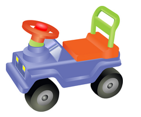
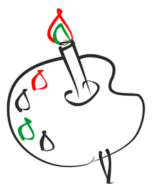

Selecting the correct image file type
Первая картинка
 Машинка в png
Почему png?
- Наличие градиента. По характеристикам размер/качество тип файла JPEG выигрывает
- Однако фон на картинке прозрачный и поэтому желательно использовать PNG
Вторая картинка
Почему jpg?
- Можно испgльзовать png или jpg. Но png больше весит, поэтому лучше использовать jpeg
- Обычная статическая фотография
- Mного деталей, при использовании gif будет смыто
- Лёгкий градиент
Третья картинка

Почему gif?
- Малоцветное изображение
- Нет градиента
- Может быть также png, однако я считаю, что размер/качество gifa будет выигрышнее